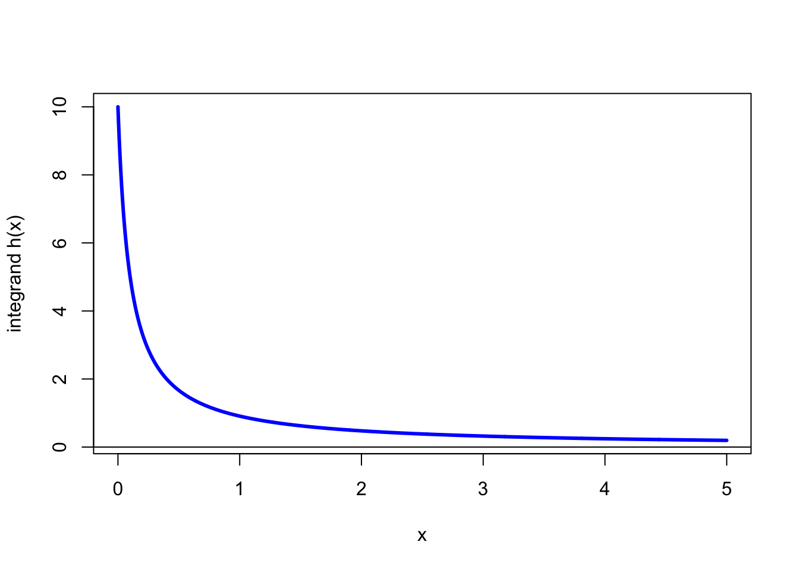

n <- 1e6
samples <- runif(n, -1, 2)
mean(samples^4)[1] 2.206319\[\newcommand{\Exg}{\operatorname{\mathbb{E}}} \newcommand{\Ex}{\mathbb{E}} \newcommand{\Ind}{\mathbb{I}} \newcommand{\Var}{\operatorname{Var}} \newcommand{\Cov}{\operatorname{Cov}} \newcommand{\Corr}{\operatorname{Corr}}\]
1. Let \(X\) be uniform on \([-1,2]\).
(a) By hand, calculate the exact value of \(\Ex X^4\).
Solution.
\[\int_{-1}^2 x^4\,\frac{1}{2-(-1)}\,\mathrm{d}x = \tfrac13 \Big[\tfrac15x^5\Big]_{-1}^2 = \tfrac13\Big(\tfrac{32}{5}-\big(-\tfrac15\big)\Big) = \tfrac{33}{15} = \tfrac{11}{5} = 2.2\]
(b) Using R, calculate a Monte Carlo estimate for \(\Ex X^4\).
Solution. I used the R code
n <- 1e6
samples <- runif(n, -1, 2)
mean(samples^4)[1] 2.2063192. Let \(X\) and \(Y\) both be standard normal distributions. Compute a Monte Carlo estimate of \(\Exg \max\{X,Y\}\). (You may wish to investigate R’s pmax() function.)
Solution. By looking at ?pmax (or maybe searching on Google) I discovered that pmax() gives the “parallel maxima” of two (or more vectors). That is the first element is the maximum of all the first elements of the vectors; the second element is the maximum of all the second elements of the vectors; and so on.
So I used the R code
n <- 1e6
xsamples <- rnorm(n)
ysamples <- rnorm(n)
mean(pmax(xsamples, ysamples))[1] 0.56414813. You are trapped alone on an island. All you have with you is a tin can (radius \(r\)) and a cardboard box (side lengths \(2r \times 2r\)) that it fits snugly inside. You put the can inside the box [left picture].
When it starts raining, each raindrop that falls in the cardboard box might fall into the tin can [middle picture], or might fall into the corners of the box outside the can [right picture].

(a) Using R, simulate rainfall into the box. You may take units such that \(r = 1\). Estimate the probability \(\theta\) that a uniformly-random raindrop that falls in the cardboard box falls into the tin can also.
Solution. I set things up so that the box is \([-1, 1]^2\), centered at the origin. This means that the inside of the can is the set of points is those \((x,y)\) such that \(x^2 + y^2 \leq 1\).
n <- 1e6
rain_x <- runif(n, -1, 1)
rain_y <- runif(n, -1, 1)
in_box <- function(x, y) x^2 + y^2 <= 1
mean(in_box(rain_x, rain_y))[1] 0.785178(b) Calculate exactly the probability \(\theta\).
Solution. The area of the box is \(2r \times 2r = 4r^2\). The area of the can is \(\pi r^2\). So the probability a raindrop landing in the box lands in the can is \[ \frac{\text{area of can}}{\text{area of box}} = \frac{\pi r^2}{4r^2} = \frac{\pi}{4} \approx 0.785. \]
(c) You realise that, despite being trapped all alone on the island, you now have a way of approximating the value of \(\pi\). If you want to calculate \(\pi\) to 6 decimal places, roughly how many raindrops do you need to fall into the box?
Solution. The phrase “to 6 decimal places” isn’t a precise mathematical one. I’m going to interpret this as getting the root-mean-square error below \(10^{-6}\). If you interpret it slightly differently that’s fine – for example, getting the width of a 95% confidence interval below \(10^{-6}\) could be another, slightly stricter, criterion.
One could work this out by hand. Since the variance of a Bernoulli random variable is \(p(1-p)\), the mean-square error of our estimator is \[ \frac{\frac{\pi}{4}(1 - \frac{\pi}{4})}{n} \approx \frac{0.169}{n} . \] So we need \[n = \frac{0.169}{(10^{-6})^2} \approx 169 \text{ billion} . \]
That said, if we are trapped on our desert island, maybe we don’t know what \(\frac{\pi}{4}(1 - \frac{\pi}{4})\) is. In that case we could do this using the can and the box. Our estimate of the variance is
var_est <- var(in_box(rain_x, rain_y))
var_est / (1e-6)^2[1] 168673676989We will probably spend a long time waiting for that much rain!
4. Let \(h(x) = 1/(x + 0.1)\). We wish to estimate \(\int_0^5 h(x) \, \mathrm{d}x\) using a Monte Carlo method.
(a) Estimate the integral using \(X\) uniform on \([0,5]\).
Solution.
n <- 1e6
integrand <- function(x) 1 / (x + 0.1)
samples1 <- runif(n, 0, 5)
mean(5 * integrand(samples1))[1] 3.932139(b) Can you come up with a choice of \(X\) that improves on the estimate from (a)?
Let’s look at a graph of the integrand \(h\).
curve(
integrand, n = 1001, from = -0.05, to = 6,
col = "blue", lwd = 3,
xlab = "x", ylab = "integrand h(x)", xlim = c(0,5), ylim = c(0, 10)
)
curve(4*dexp(x, 2), add = TRUE)
abline(h = 0)
We see that we get a much bigger contribution to the integral from values near 0. So a random variable that picks values nearer to 0 more often should give a more accurate result for moderate \(n\). I’m going to pick an exponential distribution with rate 1.
pdf <- function(x) dexp(x, 1)
phi <- function(x) (integrand(x) / pdf(x)) * (x <= 5)
samples2 <- rexp(n, 1)
mean(phi(samples2))[1] 3.928451Is this an improvement or not? We can find out by looking at the variance (or, equivalently, the mean-square or root-mean-square error).
var(5 * integrand(samples1))[1] 33.56005var(phi(samples2))[1] 6.0478545. When calculating a Monte Carlo estimate \(\frac{1}{n} \sum_{i=1}^n \phi(x_i)\), one might wish to first generate the \(n\) samples \((x_1, x_2, \dots, x_n)\) and store them, and only then, after all samples are generated, finally calculate the estimate. However, when \(n\) is extremely large, storing all \(n\) samples uses up a lot of space in a computer’s memory. Describe (in words, in R code, or in a mixture of the two) how the Monte Carlo estimate could be produced using much less memory.
6. Show that the indicator functions \(\mathbb I_A(X)\) and \(\mathbb I_B(X)\) have correlation 0 if and only if the events \(\{X \in A\}\) and \(\{X \in B\}\) are independent.
7. Let \(X\) be an exponential distribution with rate 1.
(a) Estimate \(\mathbb EX^{2.1}\) using the standard Monte Carlo method.
(b) Estimate \(\mathbb EX^{2.1}\) using \(X^2\) as a control variate. (You may recall that if \(Y\) is exponential with rate \(\lambda\) then \(\mathbb EY^2 = 2/\lambda^2\).)
(c) Which method is better?
8. Let \(Z\) be a standard normal distribution. A statistician has been investigating Monte Carlo estimates of \(\mathbb EZ^k\) for different positive integers values of \(k\). Her colleague suggests using \(Z' = -Z\) as an antithetic variable. Without running any R code, explain whether or not this is a good idea (a) when \(k\) is even; (b) when \(k\) is odd.